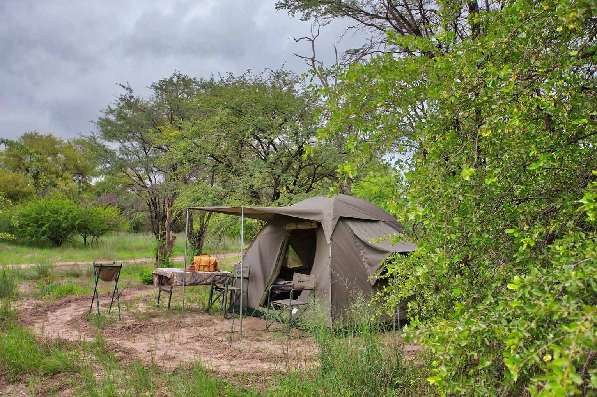
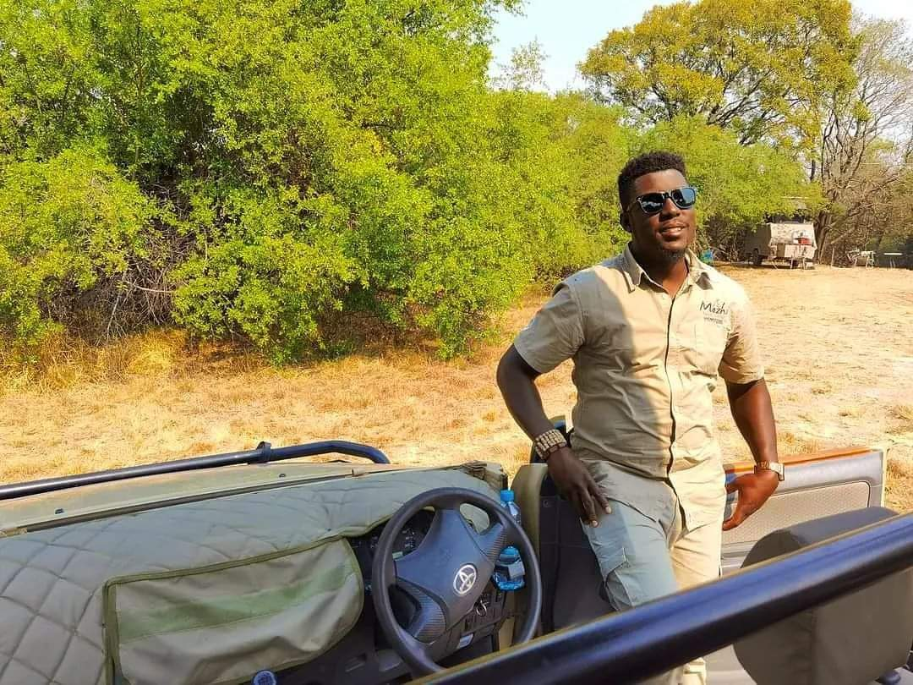
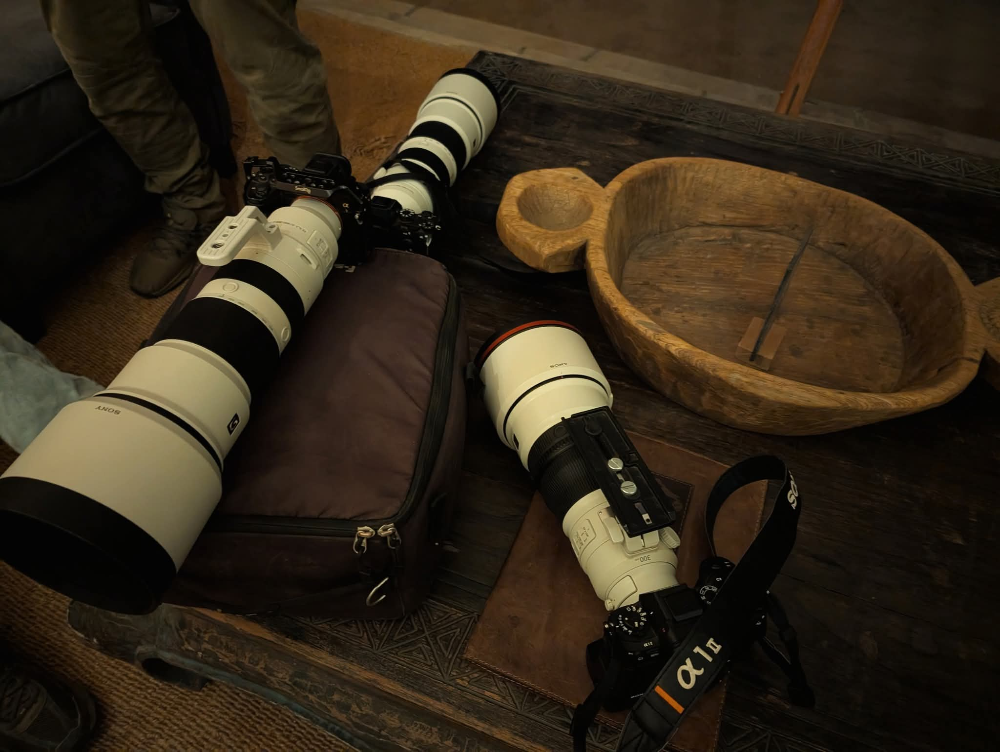
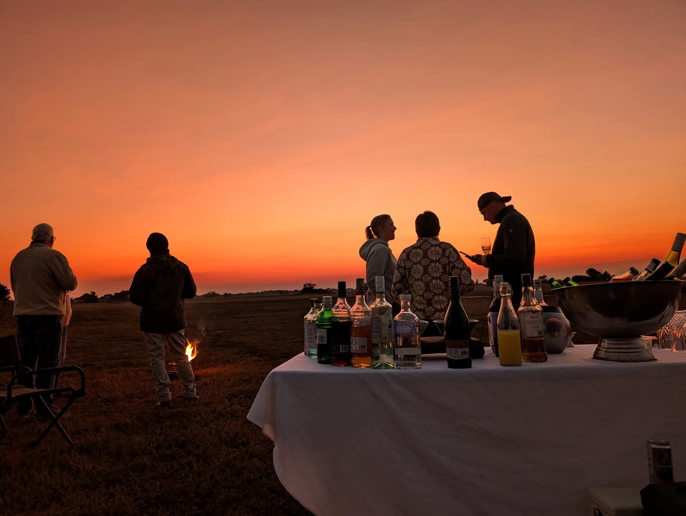
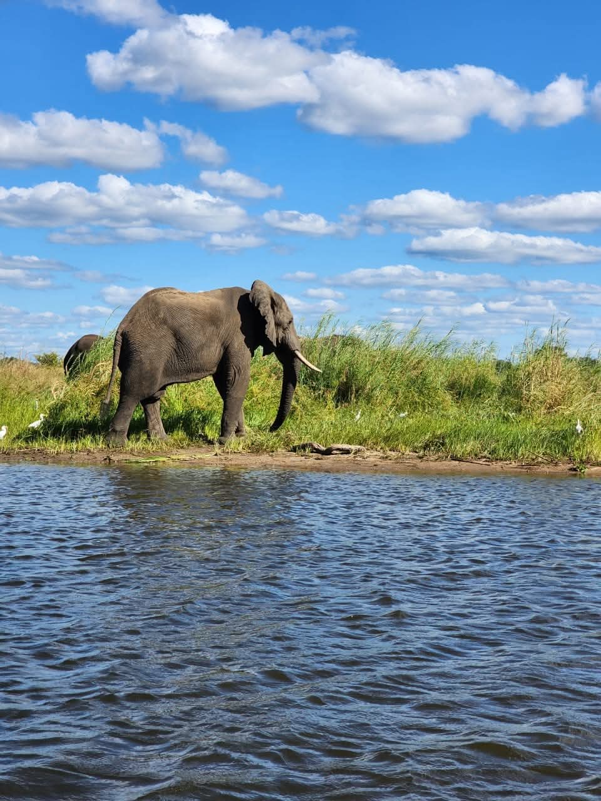
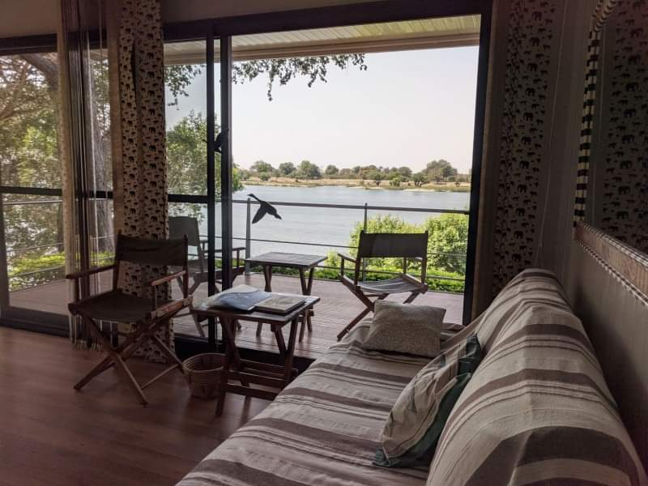

Private and Camping Safaris
Private routes, mobile camps, walking safaris, birdwatching, and close-to-nature travel for guests who want the wild to feel immediate.
Build a private safariWarm, expert planning for Zambia safaris, Southern Africa adventures, hiking, beach holidays, cultural journeys, luxury tours, hosted trips, and private transfers.
Signature journeys
Every journey is planned around pace, comfort, season, wildlife, adventure, culture, beaches, and the practical details that make regional travel feel calm.

Private routes, mobile camps, walking safaris, birdwatching, and close-to-nature travel for guests who want the wild to feel immediate.
Build a private safari
Well-matched lodges, hotels, beach stays, family holidays, and guided days with comfort held as carefully as the adventure.
Plan lodge stays
Photographic safaris, cultural experiences, hiking, water-based adventures, and route support for travelers who want more than game drives.
Shape a photo routeThe way we plan
Moor's Wild Safaris is built for guests who want clear guidance and a journey shaped around them. We shape each route around your travel style, the season, border requirements, transfer comfort, and the wildlife, adventure, beach, hiking, or cultural experiences that matter most to you.

We start with interests, pace, dates, budget range, and what you want the journey to feel like.
We match destinations, camps, lodges, hosted support, and transfers into a clear travel plan.
Transport timing, border planning, airport movement, and on-trip support are built into the experience.
Why travel with us
The best safari days feel effortless because the unglamorous work has been handled: routing, timing, vehicles, guide coordination, transfers, and contingency planning.
Regional knowledge shapes where you go, how long you stay, and how each day is paced.

Transfers, cross-border travel, airport movement, and timing are treated as core safari design.

Itineraries can account for light, patience, specialist vehicle needs, and image-led priorities.

Mobile camping, lodge stays, beach holidays, hikes, hosted trips, transfers, and private routes can be combined cleanly.
Destinations
Start with Zambia's great wild places, then connect into Malawi, Zimbabwe, Botswana, and Namibia when the journey calls for beaches, rivers, desert, culture, and adventure.

Zambia leads the offer with river safaris, walking safari heritage, big wilderness parks, Victoria Falls, Kasanka, Liuwa, and the Northern Circuit waterfalls.
Explore Zambia
Liwonde, Majete, Nyika, Lake Malawi, Mount Mulanje, beach holidays, kayaking, snorkeling, hiking, and cultural tours.
Explore Malawi
Victoria Falls, Hwange, Mana Pools, Chobe, Okavango, Moremi, Etosha, Namib dunes, Skeleton Coast, and Swakopmund.
ExploreGallery preview
A glimpse of the pace, comfort, and movement that shape a Moor's Wild Safaris journey.
Journey preview
The video stays quiet by default, giving guests a quick sense of movement, light, and field atmosphere without taking over the page.
Tap play when you want a closer look.
Guest confidence
The site is prepared for Google reviews, guest notes, and third-party proof as soon as the client is ready to connect them.
Real trip media now anchors the site, so guests can see the vehicles, camps, wildlife, and hosted details that shape the experience.
Inquiry pages keep the planning conversation practical: dates, travel style, route complexity, transfers, and the places guests care about most.
Verified Google reviews and guest notes can be connected later without inventing proof before the client is ready to publish it.
Transport and hosted support
Airport transfers, pickups, inter-city movement, cross-border tours, lodge and hotel bookings, family holidays, beach holidays, hiking trips, and hosted routes are planned with the same care as game drives and lodge stays.
Plan your safari
Share your travel window, group size, comfort level, and the experiences you care about. The first response should help shape a route, not push a package.